생산자동화산업기사 (2020-06-06 기출문제)
1과목: 기계가공법 및 안전관리
1. 치공구를 사용하는 목적으로 틀린 것은?
- 복잡한 부품의 경제적인 생산
- 작업자의 피로가 증가하고 안전성 감소
- 제품의 정밀도 및 호환성의 향상
- 제품의 불량이 적고 생산능력을 향상
(정답률: 87%)

2. CNC선반에서 그림과 같이 A에서 B로 이동시 증분좌표계 프로그램으로 옳은 것은?
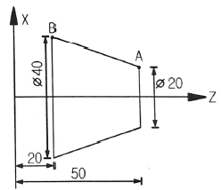
- X40.0 Z20.0 ;
- U20.0 Z20.0 ;
- U20.0 W-30.0 ;
- X40.0 W-30.0 ;
(정답률: 71%)
3. 범용 선반작업에서 내경 테이퍼 절삭가공 방법이 아닌 것은?
- 테이퍼 리머에 의한 방법
- 복식공구대의 회전에 의한 방법
- 테이퍼 절삭장치를 이용하는 방법
- 심압대를 편위시켜 가공하는 방법
(정답률: 62%)
4. 게이지블록 등의 측정기 측정면과 정밀 기계부품, 광학 렌즈 등의 마무리 다듬질가공 방법으로 가장 적절한 것은?
- 연삭
- 래핑
- 호닝
- 밀링
(정답률: 73%)
5. 공작기계의 종류 중 테이블의 수평 길이 방향 왕복운동과 공구는 테이블의 가로방향으로 이송하며, 대형 공작물의 평면작업에 주로 사용하는 것은?
- 코어 보링 머신
- 플레이너
- 드릴링 머신
- 브로칭 머신
(정답률: 79%)
6. 배럴 가공 중 가공물의 치수 정밀도를 높이고, 녹이나 스케일 제거의 역할을 하기 위해 혼합되는 것은?
- 강구
- 맨드릴
- 방진구
- 미디어
(정답률: 55%)
7. 드릴 선단부에 마멸이 생긴 경우 선단부의 끝날을 연삭하여 사용하는 방법은?
- 시닝(thinning)
- 트루잉(truing)
- 드레싱(dressing)
- 글레이징(glazing)
(정답률: 62%)
8. 선반 작업에서의 안전사항으로 틀린 것은?
- 칩(chip)은 손으로 제거하지 않는다.
- 공구는 항상 정리정돈하며 사용한다.
- 절삭 중 측정기로 바깥지름을 측정한다.
- 측정, 속도변환 등은 반드시 기계를 정지한 후에 한다.
(정답률: 91%)
9. 수평밀링과 유사하나 복잡한 형상의 지그, 게이지, 다이 등을 가공하는 소형 밀링머신은?
- 공구 밀링 머신
- 나사 밀링 머신
- 플레이너형 밀링 머신
- 모방 밀링 머신
(정답률: 64%)
10. 게이지 블록을 취급할 때 주의사항으로 적절하지 않은 것은?
- 목재 작업대나 가죽 위에서 사용할 것
- 먼지가 적고 습한 실내에서 사용할 것
- 측정면은 깨끗한 천이나 가죽으로 잘 닦을 것
- 녹이나 돌기의 해를 막기 위하여 사용한 뒤에는 잘 닦아 방청유를 칠해 둘 것
(정답률: 78%)
11. 전해연삭의 특징이 아닌 것은?
- 가공면은 광택이 나지 않는다.
- 기계적인 연삭보다 정밀도가 높다.
- 가공물의 종류나 경도에 관계없이 능률이 좋다.
- 복잡한 형상의 가공물을 변형없이 가공 할 수 있다.
(정답률: 54%)
12. 수평식 보링머신의 분류가 아닌 것은?
- 베드형
- 플로우형
- 테이블형
- 플레이너형
(정답률: 58%)
13. 절삭유의 사용 목적이 아닌 것은?
- 공작물 냉각
- 구성인선 발생 방지
- 절삭열에 의한 정밀도 저하
- 절삭공구의 날 끝의 온도상승 방지
(정답률: 75%)
14. 리드 스크루가 1인치당 6산의 선반으로 1인치에 대하여
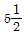
산의 나사를 깎으려고 할 때, 변환기어 값은? (단, 주동측 기어 : A, 종동측 기어 : C이다.)- A : 127, C : 110
- A : 130, C : 110
- A : 110, C : 127
- A : 120, C : 110
(정답률: 52%)
15. CG 60 K m V 1호이며 외경이 300mm인 연삭숫돌을 사용한 연삭기의 회전수가 1700rpm이라면 숫돌의 원주 속도는 약 몇 m/min 인가?
- 102
- 135
- 1602
- 1725
(정답률: 72%)
16. 구성인선에 대한 설명으로 틀린 것은?
- 치핑 현상을 막는다.
- 가공 정밀도를 나쁘게 한다.
- 가공면의 표면 거칠기를 나쁘게 한다.
- 절삭공구의 마모를 크게 한다.
(정답률: 76%)
17. 밀링 가공에서 테이블의 이송속도를 구하는 식으로 옳은 것은? (단, F는 테이블 이송속도(mm/min), fz는 커터 1개의 날 당 이송(mm/tooth), Z는 커터의 날수, n은 커터의 회전수(rpm), fr은 커터 1회전당 이송(mm/rev)이다.)
- F=fz×Z
- F=fr×fz
- F=fz×fr×n
- F=fz×Z×n
(정답률: 72%)
18. 총형공구에 의한 기어절삭에 만능밀링머신의 분할대와 같이 사용되는 밀링커터는?
- 베벨 밀링커터
- 헬리컬 밀링커터
- 인벌류트 밀링커터
- 하이포이드 밀링커터
(정답률: 63%)
19. 진직도를 수치화할 수 있는 측정기가 아닌 것은?
- 수준기
- 광선정반
- 3차원 측정기
- 레이저 측정기
(정답률: 54%)
20. 다음 연삭숫돌의 규격표시에서 ‘L’이 의미하는 것은?
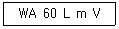
- 입도
- 조직
- 결합제
- 결합도
(정답률: 69%)
2과목: 기계제도 및 기초공학
21. 최대 실체 요구사항이 공차가 있는 형체에 적용될 경우, 기하 공차 뒤에 사용하는 기호로 옳은 것은?
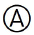
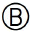
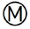
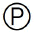
(정답률: 75%)
22. 제 3각법으로 투상한 정면도와 우측면도가 그림과 같을 때 평면도로 가장 적합한 것은?
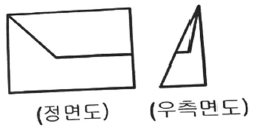
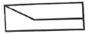
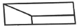
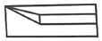
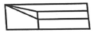
(정답률: 73%)
23. 다음 중 치수 기입의 원칙이 아닌 것은?
- 도면에 나타내는 치수는 계산하여 구하도록 기입한다.
- 치수는 되도록 주 투상도에 집중해서 지시한다.
- 관련 치수는 되도록 한 곳에 모아서 기입한다.
- 가공 또는 조립 시에 기준이 되는 형체가 있는 경우에는 그 형체를 기준으로 해서 치수를 기입한다.
(정답률: 72%)
24. I형강의 치수 표시 방법으로 옳은 것은? (단, B : 폭, H : 높이, t : 두께, L : 길이)
- IB × H × t - L
- IH × B × t - L
- It × H × B - L
- IL × H × B – t
(정답률: 57%)
25. 구름 베어링제도에서 상세한 도시 방법 중 보기와 같은 베어링은?
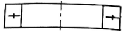
- 앵귤러 콘캑트 스러스트 볼 베어링
- 이중 방향 스러스트 볼 베어링
- 단열 방향 스러스트 볼 베어링
- 복렬 깊은 홈 볼 베어링
(정답률: 63%)
26. 아래 그림은 가공에 의한 커터의 줄무늬 기호 기름이다. ( )안에 들어갈 기호는?
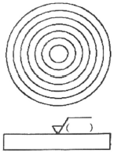
- M
- F
- R
- C
(정답률: 77%)
27. 다음 중 호의 치수 기입을 나타낸 것은?
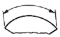
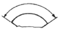
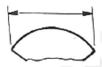
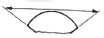
(정답률: 69%)
28. 냉간 성형된 압축 코일 스프링을 제도할 경우 일반적으로 요목표에 표시하지 않는 것은?
- 총 감김수
- 초기 장력
- 스프링 상수
- 코일 평균 지름
(정답률: 63%)
29. 도면에서 2종류 이상의 선이 같은 장소에 겹치게 될 경우에 다음 선 중에서 순위가 가장 낮은 것은?
- 중심선
- 숨은 선
- 절단선
- 치수 보조선
(정답률: 81%)
30. 동일한 기준치수에서 끼워맞춤을 할 때, 다음 중 틈새가 가장 큰 끼워맞춤으로 짝지어진 것은? (단, 공차 등급은 동일하다고 가정한다.)
- 구멍 공차역 : A, 축 공차역 : a
- 구멍 공차역 : A, 축 공차역 : z
- 구멍 공차역 : Z, 축 공차역 : a
- 구멍 공차역 : Z, 축 공차역 : z
(정답률: 64%)
31. 다음 회로에서 I1, I2, I3, I4의 관계식으로 옳은 것은?
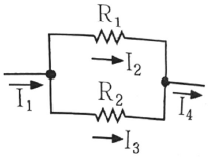
- I1=I2=I3=I4
- I1=I2+I3=I4
- I3=I2×(R2-R1)
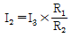
(정답률: 76%)
32. 다음 설명에 해당되는 원리는?
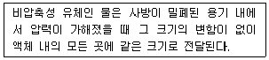
- 줄의 원리
- 파스칼의 원리
- 베르누이의 원리
- 토리젤리의 원리
(정답률: 83%)
33. 다음 정육각형의 넓이[cm2]는?
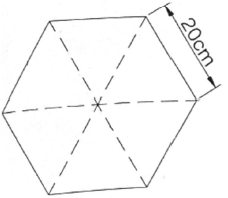
- 100√3
- 200√3
- 400√3
- 600√3
(정답률: 76%)
34. 어떤 자동차가 30km/h의 속도로 달려가고 있을 때, 10분 동안의 이동한 거리[km]는?
- 3
- 4
- 5
- 6
(정답률: 79%)
35. 그림과 같은 리벳이음에서 리벳직경(d)이 2.5cm, 두 판을 인장하는 힘이 2200kgf라면, 리벳 단면에서 발생하는 전단응력은 약 몇 kgf/cm2인가?
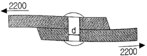
- 418.07
- 428.07
- 438.07
- 448.07
(정답률: 58%)
36. 그림과 같은 4개의 힘이 수직으로 작용할 때, 합력의 작용선 위치는 O점과 얼마나 떨어져 있는가?
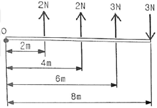
- 1.5m
- 2m
- 2.5m
- 3m
(정답률: 54%)
37. 다음 그림과 같이 물체에 작용한 힘의 크기가 F, 힘의 방향으로 물체가 이동한 거리가 S이면 한 일 W는?
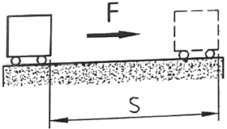
- W = F | S
- W = F - S
- W = F × S
- W = F ÷ S
(정답률: 87%)
38. 다음 중 물질의 비저항 값이 가장 작은 것은?
- 은
- 철
- 구리
- 알루미늄
(정답률: 75%)
39. 한 손으로 150N의 힘으로 원형 핸들을 돌릴 때 90N·m의 토크가 발생했다면 이 핸들의 반경은 mm 인가?
- 90
- 150
- 600
- 900
(정답률: 67%)
40. 전위차의 단위로 옳은 것은?
- 옴[Ω]
- 볼트[V]
- 와트[W]
- 암페어[A]
(정답률: 67%)
3과목: 자동제어
41. 다음 논리식을 PLC프로그램으로 올바르게 작성한 것은?
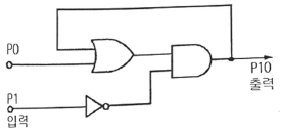
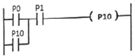
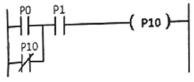
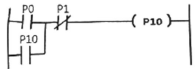
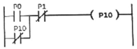
(정답률: 72%)
42. 다음 그림에서 전체전달함수
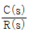
는?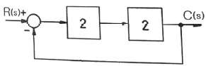
- 0.5
- 0.6
- 0.7
- 0.8
(정답률: 51%)
43. 회로 중의 압력이 최고 사용 압력의 한계를 초과하지 않도록 하는 목적으로 사용되며, 압력 상승에 의한 회로 중의 기기 파손 방지, 과다 출력을 방지하는 안전밸브의 역할을 하는 것은?
- 셔틀 밸브
- 체크 밸브
- 릴리프 밸브
- 급속배기 밸브
(정답률: 77%)
44. 다음 편 로드 실린더에서 F=200N의 힘을 발생시키자면 최소 얼마의 유압이 필요한가? (단, 실린더의 내경의 단면적은 0.2m2이다.)
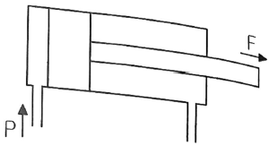
- 10Pa
- 100Pa
- 1000Pa
- 10000Pa
(정답률: 72%)
45. 컴퓨터를 구성하는 기본 요소를 기능별로 분류할 때 해당하지 않는 것은?
- 연산장치
- 제어장치
- 출력장치
- 컴파일러장치
(정답률: 79%)
46. 다음 블록선도의 전달함수로 옳은 것은?
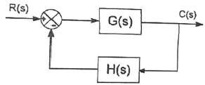
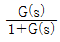
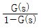
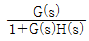
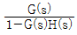
(정답률: 67%)
47. 유도기형 서보 전동기의 특징으로 틀린 것은?
- 정류에 한계가 있다.
- 고속 이용이 가능하다.
- 고 토크 이용이 가능하다.
- 브러시가 없어서 보수가 용이하다.
(정답률: 54%)
48. 불대수의 정리 중 쌍대관계를 나타내는 것으로 옳은 것은?
- 모든 변수는 보수를 만든다.
- 모든 상수 1은 0으로 바꾼다.
- 모든 OR 연산은 NAND 연산으로 바꾼다.
- 모든 AND 연산은 NOT 연산으로 바꾼다.
(정답률: 63%)
49. 전기자 반작용에 의한 여자작용을 이용하는 회전증폭기는?
- 로터트롤
- 앰플리다인
- 자기증폭기
- 차동증폭기
(정답률: 53%)
50. 개회로 제어 시스템(open loop control system)을 적용하기에 적절하지 않은 경우는?
- 외란 변수의 변화가 매우 작은 경우
- 여러 개의 외란 변수가 존재하는 경우
- 외란 변수에 의한 영향이 무시할 절도로 작은 경우
- 외란 변수의 특징과 영향을 확실히 알고 있는 경우
(정답률: 72%)
51. PLC 제어반 설치 시 고려사항으로 틀린 것은?
- 입력신호선은 덕트 배선 시 동력회로와 함께 배선한다.
- 전원회로의 노이즈 대책으로서 전원 측에 차폐변압기나 노이즈 필터를 통하게 한다.
- 출력신호의 유도부하 개폐 시 서지킬러나 다이오드를 부하의 양단에 접속한다.
- 판넬의 내부 배치 시 고압기기나 발열체, 아크 발생기기 등으로부터 가능한 분리한다.
(정답률: 61%)
52. 다음 논리식을 PLC 프로그램으로 변환한 결과로 옳은 것은?
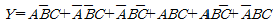
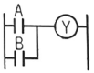
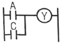
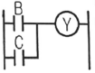
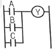
(정답률: 67%)
53. 공유압 밸브 연결구 표시법의 명칭과 기호가 잘못 짝지어진 것은?
- 배기구 – I, J, K
- 작업라인 – A, B, C
- 제어라인 – Z, Y, X
- 압축 공기 공급라인 – P
(정답률: 69%)
54. 다음 블록선도에서 제어시스템의 전달 함수로 옳은 것은?
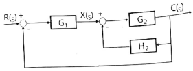
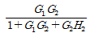
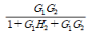
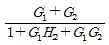
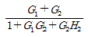
(정답률: 52%)
55. 입력 펄스에 비례하여 회전각을 낼 수 있어 디지털 제어가 용이한 특성을 가진 모터는?
- DC 모터
- 유도 모터
- 스테핑 모터
- 브러시리스 모터
(정답률: 74%)
56. 제어 시스템 내의 신호를 어떤 양자화된 신호로 제어하는 제어는?
- 서보 제어
- 적응 제어
- 최적 제어
- 디지털 제어
(정답률: 73%)
57. 공정 제어의 제어량(온도, 압력)으로 하는 제어로 목표값이 일정한 제어방식은?
- 자동조건
- 서보 제어
- 프로그램 제어
- 프로세스 제어
(정답률: 75%)
58. PC기반 제어에서 사용되는 BUS가 아닌 것은?
- CAD BUS
- ISA BUS
- PCI BUS
- VESA BUS
(정답률: 70%)
59. 주파수 응답에 주로 사용되는 입력은?
- 계단 입력
- 램프 입력
- 임펄스 입력
- 정현파 입력
(정답률: 66%)
60. 조절부의 전달특성에 비례적인 특성을 가진 제어 시스템으로 잔류편차가 발생되는 제어는?
- 비례제어
- 비례미분제어
- 비례적분제어
- 비례적분미분제어
(정답률: 50%)
4과목: 메카트로닉스
61. 스테핑 모터 구조상의 분류가 아닌 것은?
- CD형
- HB형
- PM형
- VR형
(정답률: 59%)
62. 마이크로프로세서의 특징으로 틀린 것은?
- 명령이 고속으로 실행된다.
- CPU기능을 집적회로화 한 것이다.
- RAM이나 ROM 등의 주기억 용량을 극대화한 것이다.
- 외부와의 연결을 위해 주소 버스, 데이터 버스, 제어 버스 등을 가진다.
(정답률: 69%)
63. 반도체 재료의 센서가 다른 재료의 센서에 비해 주로 사용되는 이유가 아닌 것은?
- 응답 속도가 빠르다.
- 고감도 실현이 가능하다.
- 집적화, 지능화가 가능하다.
- 유접점 센서이며 구조가 간단하다.
(정답률: 75%)
64. 비접촉식 센서가 아닌 것은?
- 근접 센서
- 포토 센서
- 리밋 스위치
- 포토 인터럽트
(정답률: 81%)
65. 정전용량을 크게 하는 방법으로 가장 적절한 것은?
- 유전율을 작게 한다.
- 비유전율을 작게 한다.
- 극판 간격을 크게 한다.
- 금속판의 단면적을 크게 한다.
(정답률: 71%)
66. 광전 센서의 종류가 아닌 것은?
- 투과형
- 미러 반사형
- 직접 반사형
- 간접 반사형
(정답률: 55%)
67. 스테핑 모터의 상(phase) 여자 방식 중 1상 여자 방식의 특징으로 틀린 것은?
- 모터의 온도 상승이 낮다.
- 전원의 용량이 낮아도 된다.
- 항상 하나의 상에만 전류를 흐르게 한다.
- 감쇠진동이 커짐에 따라 난조가 일어나지 않는다.
(정답률: 57%)
68. 자동화 생산 장비는 대부분 DC 24V를 사용한다. DC 24V가 해당되는 값은?
- 평균값
- 최댓값
- 실효값
- 순시값
(정답률: 52%)
69. 다음 중 일반적인 조임과 풀림의 목적으로 사용되는 체결용 나사로 가장 적절한 것은?
- 볼 나사
- 사각 나사
- 삼각 나사
- 사다리꼴 나사
(정답률: 63%)
70. 18°의 스텝각을 갖는 스테핑 모터에서 분당 펄스수가 600인 경우 회전수[rpm]는?
- 10
- 12
- 30
- 120
(정답률: 64%)
71. 저항 R1, R2, R3, R4가 직렬로 연결되어 있을 때 이들이 병렬로 연결되어 있을 때의 합성저항의 비(직렬/병렬)는? (단, R1=R2=R3=R4이다.)
- 4
- 8
- 12
- 16
(정답률: 70%)
72. 가속도 센서의 응용범위가 아닌 것은?
- 기계 노크음 검출
- 기계 이상온도 검출
- 기계 이상진동 검출
- 자동차 급브레이크 검출
(정답률: 70%)
73. 교류 100V, 500W의 전열기를 교류 60V로 사용하였을 때 소비 전력은 몇 W인가?
- 180
- 270
- 360
- 450
(정답률: 46%)
74. NAND회로의 논리식으로 옳은 것은? (단, A와 B는 입력, C는 출력이다.)
- C = A + B
- C = A · B
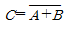
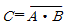
(정답률: 57%)
75. 공업 계측용으로 이용되고 있는 소자 중 온도를 전압으로 변환하는 것은?
- 열전대
- 트라이악
- 제너 다이오드
- 광전 다이오드
(정답률: 77%)
76. 다음 연산 증폭기는 어떤 회로인가?
- 비교기
- 미분기
- 적분기
- 가산기
(정답률: 60%)
77. 다음 회로의 출력 전압값으로 옳은 것은?
(정답률: 58%)
78. 위치, 속도, 가속도 등의 기계량을 제어하는 것으로 수치제어 공작기계나 로봇에 많이 응용되는 제어는?
- 서보(servo) 제어
- 시퀀스(sequence) 제어
- 개루프(open-loop) 제어
- 프로세스(process) 제어
(정답률: 79%)
79. 센서가 자동화시스템에 사용되는 이유로 적절하지 않은 것은?
- 고장 여부 진단
- 자재 관리 및 분류 작업
- 공구의 수명 계측 및 검출
- 자동화장비를 구축할 때 설비비용 절감
(정답률: 71%)
80. 마이크로프로세서의 주요 구성 부분이 아닌 것은?
- 연산부
- 제어부
- 표시부
- 레지스터부
(정답률: 69%)